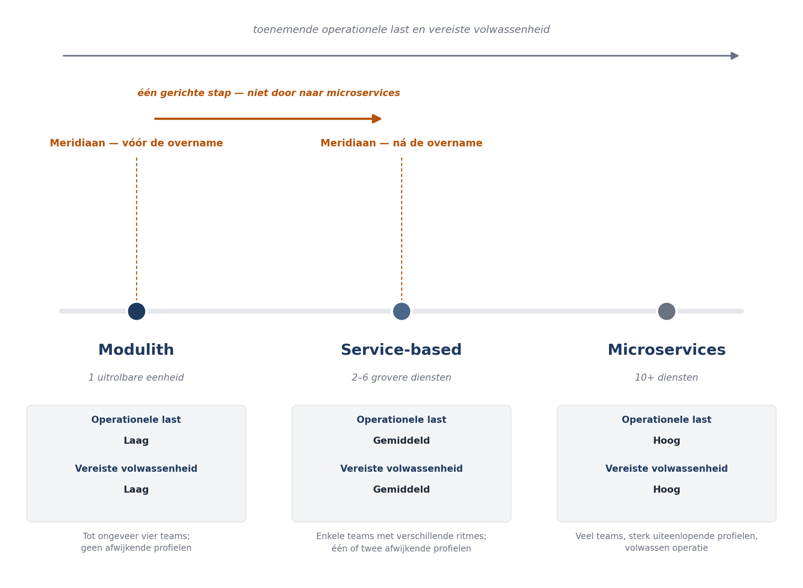

Deel 13 — Microservicesarchitectuur
Deelnemersreader
Cursus Softwarearchitectuur · Niveau 2 (CPSA-A) · Deel 13 van 28 Competentiegebied: technologisch
Positionering
Voorbereiding op het CPSA-Advanced-traject van het iSAQB; deze cursus is geen geaccrediteerde training en levert geen credit points. Raadpleeg isaqb.org voor het actuele modulelandschap. Technologieneutraal; arc42 + C4 als referentienotatie.
Leerdoelen van dit deel
Na dit deel kunt u:
- de herzieningsgrens van een distributiekeuze toetsen in plaats van hem te vergeten;
- het spectrum tussen modulith, service-based en microservices beschrijven en positioneren;
- bepalen langs welke grens u splitst en waarom de aggregaatgrens daarbij leidend is;
- de gevolgen van een netwerkgrens voor consistentie benoemen en het saga-patroon toepassen;
- het outbox-patroon uitleggen en de rol van idempotentie beschrijven;
- koppelvlakversiebeheer inrichten voor onafhankelijk uitrolbare diensten;
- een splitsing uitvoeren met het strangler-patroon, en bepalen wanneer u níét splitst.
13.1 De aanleiding: sprint 9
In deel 5 van niveau 1 is de distributiekeuze vastgelegd in een ADR, met een herzieningsgrens:
Deze keuze wordt heroverwogen zodra het aantal ontwikkelteams boven de vier komt, zodra een module aantoonbaar meer dan tienvoudige capaciteit vraagt ten opzichte van de rest, of zodra een module een beschikbaarheidseis krijgt die de rest niet heeft.
In sprint 9 gebeurt er iets. Meridiaan neemt de uitvoering over van een pensioenfonds van een fuserende werkgever. Dat betekent: 60.000 extra deelnemers, een derde ontwikkelteam vanaf het volgende kwartaal, en — het scherpst — een werkgeversaanlevering die tijdens de conversieperiode niet 4.000 maar tot 200.000 mutaties per nacht bevat.
De programmadirecteur stelt de vraag die iedereen verwachtte: moeten we nu splitsen?
Dit deel gaat over hoe u die vraag beantwoordt. Het antwoord is niet vanzelf ja en niet vanzelf nee, en de manier waarop u ertoe komt is belangrijker dan de uitkomst.
De eerste observatie is dat de herzieningsgrens werkt. Zij is gesteld op vier teams; er komt een derde. Zij is gesteld op tienvoudige capaciteit; de batch gaat tijdelijk maal vijftig. Dat is precies waarvoor de grens bestond, en het feit dat er nu een gestructureerd gesprek plaatsvindt in plaats van een reflex, is de opbrengst van deel 2 en deel 5 van niveau 1.
13.2 Het spectrum
Distributie is geen schakelaar. Tussen modulith en fijnmazige microservices ligt een spectrum, en de tussenposities worden in de praktijk ondergewaardeerd omdat er geen mode aan verbonden is.
| Vorm | Uitrolbare eenheden | Gegevens | Wanneer |
|---|---|---|---|
| Modulith | 1 | Eén database, gescheiden schema’s | Tot ongeveer vier teams; geen afwijkende profielen |
| Service-based | 2–6 grovere diensten | Vaak nog gedeelde database | Enkele teams met verschillende ritmes; één of twee afwijkende profielen |
| Microservices | 10+ | Eigen opslag per dienst | Veel teams, sterk uiteenlopende profielen, volwassen operatie |
Service-based is de vergeten middenpositie. Enkele grovere diensten geven u onafhankelijk uitrollen en onafhankelijk schalen waar u het nodig hebt, tegen een fractie van de operationele last van fijnmazige microservices. Voor Meridiaan is dit vrijwel zeker de juiste plek op het spectrum na de overname.
De regel die u meeneemt uit deel 5: de drijvers vertellen u of u distribueert, niet hoe fijn. Fijnmazigheid is een aparte beslissing, en te fijn is duurder dan te grof — want samenvoegen is goedkoper dan splitsen.

13.3 De drijverstoets opnieuw
Loop de vier drijvers uit deel 5 opnieuw langs, nu met de situatie van sprint 9.
| Drijver | Vóór de overname | Na de overname |
|---|---|---|
| Onafhankelijk uitrollen | Afwezig (2 teams) | Mogelijk — drie teams, maar zitten zij elkaar in de weg? |
| Onafhankelijk schalen | Afwezig | Aanwezig, tijdelijk — de conversiebatch vraagt maal vijftig |
| Onafhankelijk falen | Afwezig | Mogelijk — mag een vastlopende conversie het dagelijkse mutatieproces raken? |
| Onafhankelijke technologie | Afwezig | Afwezig |
Twee drijvers zijn niet meer afwezig, en dat verandert de conclusie — maar niet zoals u zou verwachten.
Bij drijver 2 (schalen) is het beslissende woord tijdelijk. De conversie duurt naar verwachting vier maanden. Een architectuurwijziging aangaan voor een tijdelijk volume is de klassieke overreactie; hier gelden eerst de goedkopere opties uit deel 6: tijdelijk meer capaciteit, de conversie buiten kantooruren draaien, of de conversie in tranches verdelen.
Bij drijver 3 (falen) zit het echte punt. De vraag mag een vastlopende conversie het dagelijkse mutatieproces raken? is niet met capaciteit op te lossen. Als de conversiebatch de gedeelde database dichtzet, staat het portaal stil — en dat is een beschikbaarheidsprobleem voor 340.000 deelnemers veroorzaakt door een tijdelijk project.
Bij drijver 1 (uitrollen) is de vraag empirisch en meestal onbeantwoord. Drie teams is niet automatisch een probleem. Het probleem ontstaat wanneer teams op elkaar wachten. Dat is meetbaar: hoe vaak wordt een uitrol uitgesteld omdat een ander team niet klaar is?
De uitkomst voor Meridiaan: splits de werkgeversaanlevering en conversie af als eigen dienst. Eén splitsing, op grond van drijver 3, met drijver 2 als bijkomend argument. De rest blijft modulith.
Dat is service-based, niet microservices. En het is precies wat de modulith beloofde: de module was al afgezonderd, bezat haar eigen gegevens en communiceerde met gebeurtenissen — splitsen is nu een verhuizing en geen verbouwing.
13.4 Waarlangs splitst u?
Wanneer u splitst, is de grens niet vrij te kiezen.
De aggregaatgrens is leidend. Uit deel 12: binnen een aggregaat geldt onmiddellijke consistentie, daarbuiten uiteindelijke. Een netwerkgrens dwingt uiteindelijke consistentie af. Dus loopt een dienstgrens nooit dwars door een aggregaat.
Wie dat toch doet, krijgt gedistribueerde transacties nodig, en die zijn duur, complex en foutgevoelig. De klassieke fout is een dienstgrens trekken op basis van een technische indeling — een “validatieservice”, een “berekeningsservice” — waardoor één logische handeling twee diensten moet wijzigen.
De praktische ordening:
- Bounded context (deel 11) — de grofste grens, altijd een geldige dienstgrens.
- Aggregaat (deel 12) — de fijnste geldige grens.
- Alles daartussen kan, mits een dienst één of meer complete aggregaten bevat.
- Dwars door een aggregaat: nooit.
Voor de conversiedienst klopt dit: werkgeversaanlevering is een eigen module met eigen aggregaten, binnen dezelfde bounded context. De grens loopt niet door een aggregaat heen.
13.5 Wat een netwerkgrens verandert
Uit deel 5 kent u de kosten in algemene zin. Hier de vier die u concreet moet oplossen.
Verdwenen transacties: het saga-patroon
Over een dienstgrens heen bestaat geen gedeelde transactie. Een reeks stappen die samen moeten slagen, wordt een saga: een opeenvolging van lokale transacties, elk met een compenserende actie voor het geval een latere stap faalt.
Voor de conversie: deelnemer aangemaakt → rechten overgenomen → mutatiehistorie geconverteerd → conversie bevestigd. Faalt stap 3, dan moet stap 2 gecompenseerd worden — niet teruggedraaid, want dat kan niet, maar gecorrigeerd met een expliciete tegenboeking.
Twee vormen:
- Georkestreerd — één component stuurt de saga aan en kent de volgorde. Voor Meridiaan de juiste keuze, om dezelfde reden als in deel 5: het proces moet aantoonbaar zijn.
- Gechoreografeerd — elke stap reageert op de gebeurtenis van de vorige. Elegant en niet te volgen.
Compensatie is een domeinvraag, geen technische. Wat betekent het om een overgenomen recht ongedaan te maken? Die vraag beantwoordt de actuaris, niet de architect. Dat is de belangrijkste les van dit onderwerp: een saga verplaatst een technisch probleem naar het domein, en dat maakt hem duur.
Betrouwbaar publiceren: het outbox-patroon
Het probleem: u wijzigt gegevens in uw database én u wilt een gebeurtenis publiceren. Dat zijn twee systemen; als de database slaagt en het publiceren faalt, is de gebeurtenis verloren — en niemand weet het.
De oplossing: schrijf de te publiceren gebeurtenis in dezelfde transactie weg in een tabel (de outbox). Een apart proces leest die tabel en publiceert. Slaagt het publiceren niet, dan blijft de regel staan en wordt het opnieuw geprobeerd.
De prijs is dat een gebeurtenis meer dan één keer gepubliceerd kan worden. Daarom moet elke ontvanger idempotent zijn: dezelfde gebeurtenis twee keer verwerken heeft hetzelfde effect als één keer. Praktisch met een verwerkte-gebeurtenissenregistratie op ontvangerszijde.
Dit is geen randgeval. In een gedistribueerd systeem is “precies één keer bezorgd” niet haalbaar; wat haalbaar is, is “minstens één keer bezorgd, precies één keer verwerkt” — en dat tweede is uw werk, in elke ontvanger.
Waarneembaarheid
De correlatie-identificatie uit deel 8 van niveau 1 wordt hier onmisbaar in plaats van nuttig. Zonder gecorreleerde tracering over dienstgrenzen is een storing niet te volgen — dat was bevinding B7. Deel 15 werkt dit uit.
Koppelvlakversiebeheer
Zodra twee diensten onafhankelijk uitrollen, kunt u een koppelvlak niet meer eenzijdig wijzigen. De regels:
- Achterwaarts compatibel wijzigen is de norm: velden toevoegen mag, verwijderen of hernoemen niet.
- Breken vereist twee versies naast elkaar, met een afgesproken termijn waarna de oude vervalt.
- De ontvanger negeert wat hij niet kent, zodat de zender kan toevoegen zonder te coördineren.
Voor de werkgeverskoppeling uit deel 11 (open host service met published language) geldt dit dubbel: elf werkgeverssystemen hebben zich aan uw formaat aangepast, en die kunt u niet in één nacht laten meebewegen.
13.6 Hoe u splitst: het strangler-patroon
U splitst niet met een grote verbouwing. Het beproefde patroon:
- Een doorgeefpunt plaatsen vóór de functionaliteit die u gaat verplaatsen.
- De nieuwe dienst bouwen naast de bestaande module.
- Verkeer geleidelijk verleggen, te beginnen met een klein deel of met een enkele werkgever.
- Meten — de drijver die de splitsing rechtvaardigde, moet aantoonbaar beter worden.
- De oude module verwijderen wanneer er geen verkeer meer langs gaat.
Stap 5 wordt overgeslagen en dat is de meest voorkomende fout. Het resultaat is een systeem met twee implementaties van hetzelfde, waarvan er één slaapt tot iemand hem per ongeluk aanroept. Zet er een termijn en een eigenaar op — de borgingsvorm uit deel 9.
Stap 4 wordt eveneens overgeslagen, en dat is erger. Een splitsing die niet meetbaar oplevert wat zij beloofde, moet worden teruggedraaid. Samenvoegen is goedkoper dan splitsen; dat werkt beide kanten op.
13.7 Wanneer u niet splitst
- Wanneer de drijver tijdelijk is. De conversiepiek duurt vier maanden; capaciteit is dan goedkoper dan architectuur.
- Wanneer de operatie het niet aankan. Beheer zonder nachtbezetting kan niet zes diensten bewaken. Dat is een randvoorwaarde uit deel 2 van niveau 1 en zij is niet weg.
- Wanneer de grens door een aggregaat loopt. Dan splitst u niet; dan modelleert u eerst opnieuw.
- Wanneer u de teams niet meebeweegt. Een dienst zonder eigenaar wordt niemands zorg. De omgekeerde Conway-beweging — de organisatie aanpassen aan de gekozen structuur — hoort bij de beslissing, niet erna. Deel 21 werkt dit uit.
Samenvatting
- Een herzieningsgrens werkt alleen als hij wordt getoetst. Sprint 9 is die toets, en het gestructureerde gesprek is de opbrengst van niveau 1.
- Distributie is een spectrum. Service-based — enkele grovere diensten — is de ondergewaardeerde middenpositie en voor Meridiaan de juiste.
- De drijvers vertellen of u distribueert, niet hoe fijn. Te fijn is duurder dan te grof, want samenvoegen is goedkoper dan splitsen.
- Bij de conversie is drijver 3 (onafhankelijk falen) het echte argument; drijver 2 is tijdelijk en dus geen architectuurargument.
- Een dienstgrens loopt nooit dwars door een aggregaat. Bounded context is de grofste geldige grens, het aggregaat de fijnste.
- Een saga verplaatst een technisch probleem naar het domein: compensatie is een domeinvraag. Dat maakt hem duur.
- Outbox plus idempotentie: “precies één keer bezorgd” bestaat niet; “minstens één keer bezorgd, precies één keer verwerkt” is uw werk in elke ontvanger.
- Splits met het strangler-patroon. Stap 4 (meten) en stap 5 (opruimen) worden overgeslagen; beide horen een eigenaar en een termijn te hebben.
Kernbegrippen
Service-based architectuur — enkele grovere, onafhankelijk uitrolbare diensten, vaak met gedeelde opslag.
Saga — reeks lokale transacties met compenserende acties, als vervanging van een gedeelde transactie.
Compensatie — een expliciete tegenhandeling die het effect van een eerdere stap corrigeert; een domeinvraag.
Outbox — het in dezelfde transactie wegschrijven van te publiceren gebeurtenissen, met een apart publicatieproces.
Idempotentie — een bewerking veilig kunnen herhalen; noodzakelijk bij minstens-één-keer-bezorging.
Strangler-patroon — geleidelijk verkeer verleggen van een bestaande implementatie naar een nieuwe, met verwijdering als sluitstuk.
Achterwaartse compatibiliteit — een koppelvlak wijzigen zonder bestaande afnemers te breken.
Verder lezen
- Newman, Building Microservices (2e druk) — hoofdstuk 1, 3 en 4.
- Newman, Monolith to Microservices — het beste boek over splitsen, inclusief wanneer niet.
- Richardson, Microservices Patterns — de saga- en outboxhoofdstukken.
- Fowler, StranglerFigApplication — het oorspronkelijke, korte stuk.
Ductus B.V. · Cursus Softwarearchitectuur · Niveau 2, deel 13 · Deelnemersreader